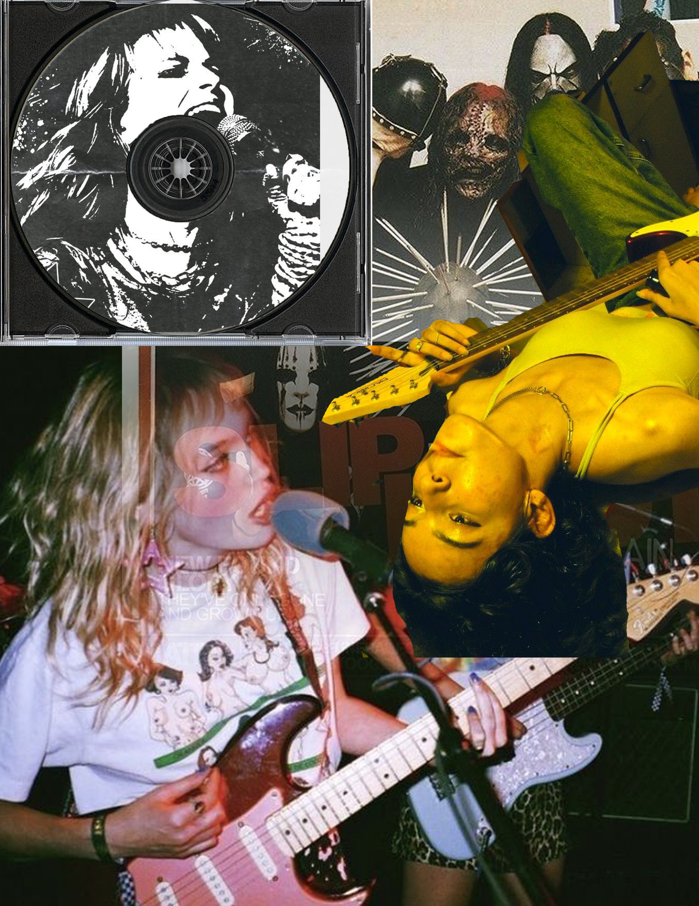
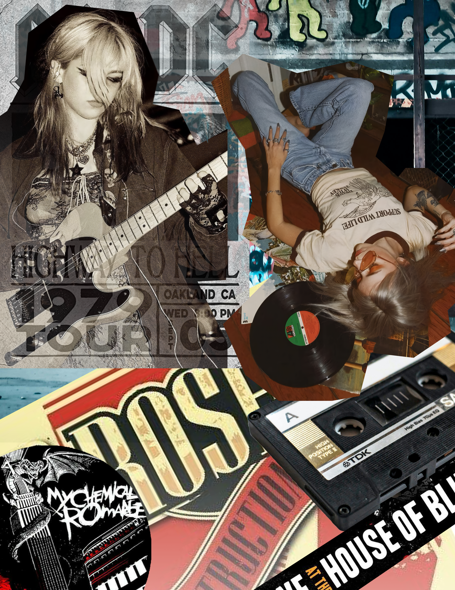
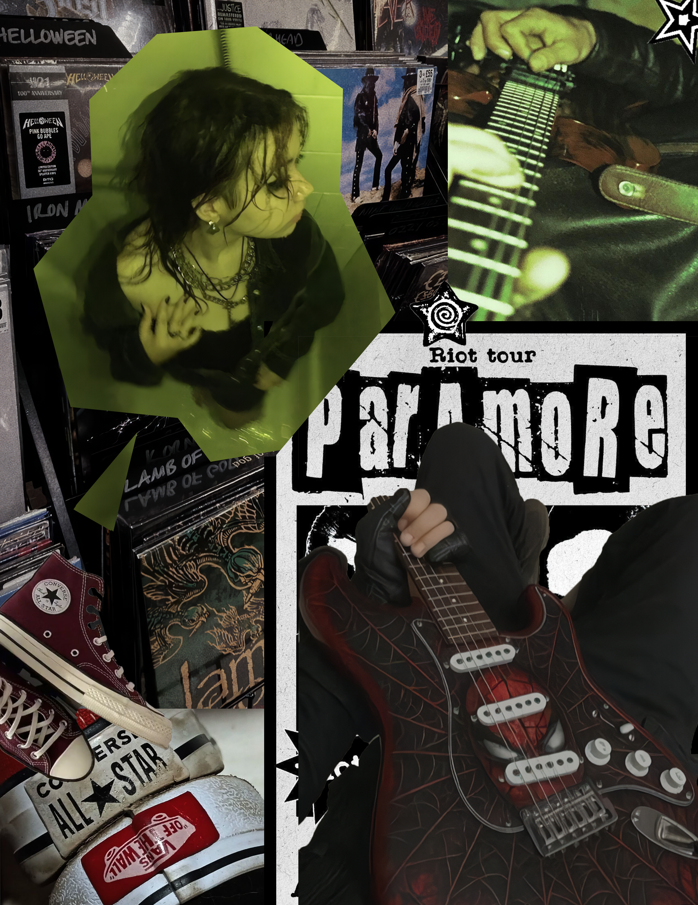

Art 74 & 75 Works!
These digital illustrations were taken and glitched using Notepad ++ and Audacity to achieve different effects that mimic disrupted analog techniques. The first image is meant to mimic a multiple exposure effect much like in photography while the second image mimics a failing film reel. Both of these correlate to the main character, a student working on her thesis film before getting caught up in supernatural horrors.


Originally a project from Art 74 that I reworked in Art 101, this vector face project is one where I experimented with for loops and random variables to create moving effects for the viewer to interact with. This is a character who struggles with substance abuse, and this is meant to visualize what that experience is like while abusing it. Feeling disconnected, shaky, and disoriented.

"Witches Haul" is a short and entirely HTML coded visual novel project. The story follows you, a small up-and-coming witch searching for new items to start out and carry out your own adventure. Though admittedly, you are buying from a rather shady merchant in a shop barely staying on its hinges...

This 3D Model was built in and exported from the game, Minecraft. A project from Art 74 that is based on the popular blind box characters known as "Smiskis." This was my first time ever creating a 3D Model before and especially in a less conventional way than one would expect.


"Museum Visit" allows you to talk with and explore a museum with your fellow classmates on a field trip through an HTML based visual novel. You are able to point and click on your classmates as you wander through the gallery; searching for one of their siblings along the way and having a fun time eavesdropping their conversations!


A series of collages based on the theme of punk rock using both adobe photoshop and adobe lightroom. This is a combination of rasterized images sliced and put together using vectors in lightroom with the pen tool.



"Gameplay Loop" is a video project that explores my daily life, but ends the exact same way that it starts. This project was created at a time where every day felt like I was just going through the motions, and not entirely present with what I was doing or where I was going. It was like I was viewing my own life through a screen of a console, playing the same scenarios over and over again. However, there are always ways to get out of that loop when it comes to reality.
Primarily a fun experiment with combining sounds together, "About 12,000" takes a conversation I was hearing in the background of one of my videos and amplifies it. It's as though that conversation is playing in the back of your head while you are wandering around the aquarium, the subject of that very conversation. It's meant to also envoke the melancholic and nostalgic feeling of being back in my home after months of being away in San Jose.
"Too Much Noise" is a piece I created when I was stressed with an overflow of assignments and projects all due within the same week. Every day felt like an overlapping of the same feeling; being at my desk typing for hours and hours. I usually found the noise comforting.. until it became all too much.